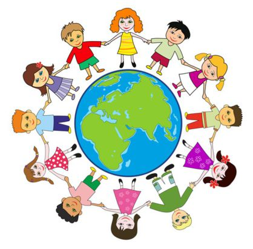
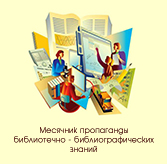
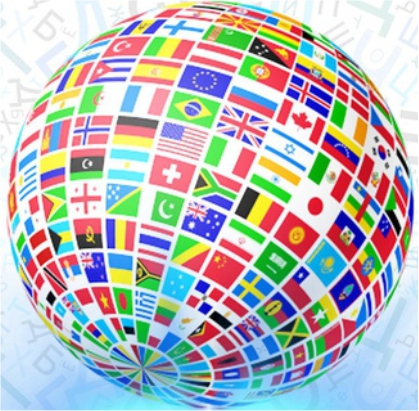

Летние каникулы
Время, свободное от уроков, а значит самое время для чтения. В период летних каникул в библиотеках организуются акции, конкурсы, викторины. Ежегодно обновляется список летнего чтения для детей и раздается учащимся. Готовятся тематические закладки для детей. Библиотеки для своих юных читателей стараются сделать летние каникулы, яркими, солнечным и невероятно книжным.

День государственного флага Российской Федерации. Традиционно к этому дню приурочено проведение массовых мероприятий. Целью проведения, является формирование у подрастающего поколения уважительного отношения к государственным символам страны, воспитание чувства гордости, патриотизма, любви к своей Родине. В библиотеках района оформляются тематические и информационные выставки, на которых представлены книги для всех возрастных категорий и посвященные государственным символам России.
22 августа

8 июля
Всероссийский день семьи, любви и верности. В это день посетители библиотек узнают об истории праздника, познакомятся с удивительной жизнью православных святых Петра и Февронии Муромских. Для родителей и детей будут организованы семейные викторины, с веселыми вопросами и необычными заданиями. Также будут оформлены книжные выставки и организованы мастер-классы.

День физкультурника в России отмечается во вторую субботу августа. Это праздник всех, кто любит спорт - вне зависимости от профессии и возраста. В этот день в библиотеках оформляются тематические книжные выставки, устраивают всевозможные подвижные игры и мероприятия.
9 августа